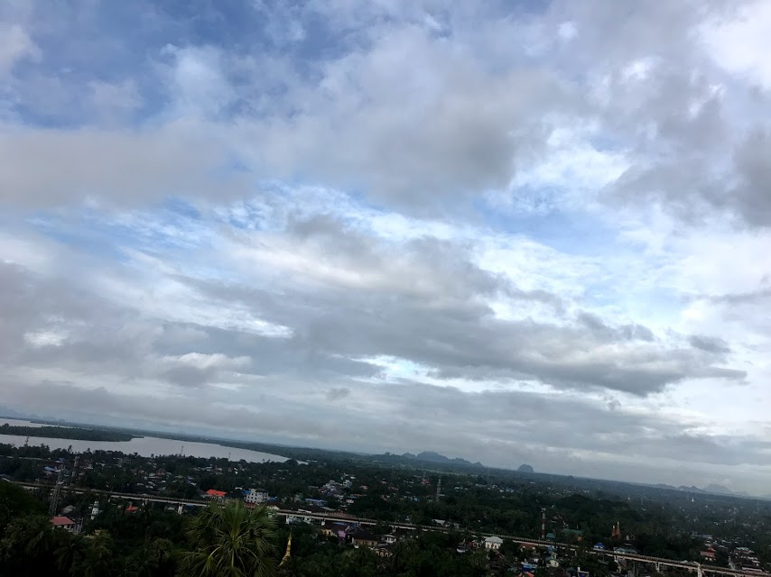

CHANGE THE WORLD
PowIs Project Team Homepage

PowIs Projectのホームページへようこそ！！
PowIsはテクノロジーやITを使って世の中にイノベーションを起こす研究を行っている団体です。
Twitter:@PowIsProject
E-Mail:powisproject**@**gmail.com
PowIsの目標
1つ目は、PowIs For EducationテクノロジーやITを使って発展途上国の教育を充実させることです。
そして、発展途上国の子供たちが将来大人になってエンジニア・プログラマー・科学者などのものづくりができる人財、
そして、世界中どこででも雇用がある人財を育て、その国（発展途上国）全体を豊かにすることが目標です。
PowIs Maps２つめは、テクノロジーやITを使って世の中にイノベーションを起こすことです。
まだ、誰も見たことのないものを発明し
イノベーションを起こすことが目標です。
活動内容
PowIs For Education Team
・現地調査/世界の教育について調べること/1台1万円のパソコン研究
例：現地調査では、インターネットでは、ミャンマーの農村地帯や病院や学校を訪れました。
主に、電力供給インフラ・通信インフラ・教育について調査してきました。
開発では、現地の役に立つコンピューターを研究しています。
PowIs Maps Team
・観光地の調査/観光情報の調査/サービスの開発
２０２０年の時期の観光客向けに快適にマップや観光情報のコンテンツにアクセスできるようにすることと
バリアフリーに特化したマップを作ることが目標です。
今までの活動
Now Makeing・・・
idea & Project Plan
２０１７年１２月 PowIs Project (FIRST)
『ソーラーパネルと電動アシスト自転車を使って発展途上国の全く電力供給のない地域に電力供給インフラを作ること』
２０１８年 ５月 PowIs Project 2
『Raspberry Piを使い、発展途上国の教育の充実させること』
２０１８年 ６月 PowIs Project 3
『Andoroid Medical Sensor を使い発展途上国の医療設備の充実していない地域の医療の充実を考えた』
THANK YOU VERY MUCH
SENT ME E-MAIL:powisproject@gmail.com
団体要項
名称：学生団体PowIs （パウイズ）
設立日：２０１７年11月
部署：PowIs For Education/PowIs Maps>>経営研究部門(Business Team)と技術開発部門（Project Team)
（経営研究部門では経営学について研究しています。技術開発部門では開発をしています。）
E-MAIL: powisproject@gmail.com
主な活動：発展途上国支援の研究・Map作成
【お問い合わせ】
ホームページをご覧いただき誠にありがとうございます。
PowIsについてなにか、質問やご不明な点がありましたら下記のメールアドレスまでご連絡ください。
powisproject@gmail.com